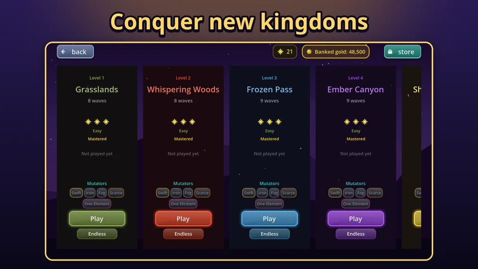

If you are wondering what Tower Defense Kingdom: Idle TD is, it is a tower defense game for Android where your castle sits in the middle of the map, enemies walk in from the edges, and you stop them with towers built from four elements: fire, ice, lightning and earth. I am Maurice Moret, the solo developer, and I built it around one idea: towers get much more interesting when their elements interact. You can get Tower Defense Kingdom: Idle TD on Google Play and try it for free.
How a level plays
Every level is a set of waves. Your castle is in the centre, and you place towers on a ring of build slots around it. Enemies arrive from the edges of the map, and in the first level they come from all four sides. If an enemy reaches the castle you lose a life, and when the lives run out the level is lost. Survive every wave and you win, earning up to three stars.
The first levels give you 8 slots, and later maps offer more, up to 12. That limit is the heart of the game. You cannot just cover the map in towers, so you choose which elements go where and how far to upgrade each one.

Four elements, one big idea
Each element has a job. The Fire Tower burns enemies, the Ice Tower slows them, the Lightning Tower chains to nearby enemies, and the Earth Tower deals area damage on impact. Fire and ice towers cost 100 gold, lightning and earth towers 125.
The twist is that when two or more different elements hit the same enemy within a short window, they trigger a combo with its own damage bonus and status effect. There are six pair combos, four triple combos and one four element combo. I explain every one of them in how elemental combos work, and the short version is that a mixed defence beats a pure one almost every time.
What else is in the game
- 100 campaign maps, each with its own layout and its own realm, from Grasslands and Whispering Woods to Frozen Pass and Ember Canyon.
- 25 enemy types with abilities such as healing, dodging, shields, splitting and disabling your towers, plus bosses that test your defence.
- Fusion: merge two towers of different elements into one new tower. See the tower fusion guide for how and when.
- Mutators that change the rules of a run for a bigger reward, and a daily challenge that is the same for every player on that day.
- Endless mode and expeditions, a roguelite run through ten stages with one pool of lives.
- Relics, 24 collectible items in six sets that bend the rules a little in your favour.
- Castle income, so your kingdom keeps earning while you are away.

Gold, upgrades and choices
Gold is earned from kills and waves, and you spend it on towers and on upgrades. Each tower has five stats that can be raised to level 5: damage, speed, range, pierce and critical chance, plus one special upgrade that depends on the element, such as burn damage for fire or chain count for lightning. Selling a tower returns 60 percent of what you put in, so changing your mind is cheap but not free. The upgrade screen in the picture below is a good example of how much you can tune a single tower.

Gold that you do not spend at the end of a level is not wasted either. It is banked and added to the starting gold of your next campaign level, up to a cap per level.
Progression without an account wall
You earn stars by winning levels, and gems from stars, daily challenges, goals and the castle. Gems feed a skill tree and the castle itself, so each session makes the next one a little stronger. The game has a Goals screen and a season track as well, so there is usually something close to finish.
There is no sign-in. Your save lives on your phone, and a transfer code lets you back it up and move it to a new device. The game is available in 12 languages, including English, Dutch, German, Spanish, French, Portuguese, Italian, Japanese, Korean, Chinese, Russian and Turkish.
Is it a good fit for you?
If you like tower defense games where the positions matter less than the combinations, this one is for you. It is a landscape game that works in short sessions: a level takes a few minutes, and the auto and speed buttons in the top bar help when you know what you are doing. It is also friendly to newcomers, because the first maps are eased with fewer and weaker enemies in the early waves.
The store offers optional purchases: Remove Ads, a VIP Pass that gives 25 gems and 250 gold every day, and a Speed Boost that unlocks 2x and 3x speed in battle. None of them is needed to play the campaign. If you want a plan for the first few hours, read the beginner tips, and when you want to move faster later, the guide to progressing faster covers relics, the daily challenge and the castle.
Try it
The first level is a gentle start, and you will see your first combo within a few waves. Download Tower Defense Kingdom: Idle TD from Google Play, defend your castle, and tell me what you think. If you run into a problem, the game has a Support panel built in.
Frequently Asked Questions
Is Tower Defense Kingdom: Idle TD free to play?
Yes, you can download it free on Google Play. The store has optional purchases such as Remove Ads, a VIP Pass and a Speed Boost, plus gem and gold packs, but the whole campaign can be played without paying.
Do I need a Google account to play?
No. Progress is saved on your device. You can back it up and move it to a new phone with a transfer code, so you never have to sign in to anything.
How many maps does Tower Defense Kingdom: Idle TD have?
The campaign has 100 maps, each with its own layout, plus endless mode, expeditions and a daily challenge for when you want something different from the main levels.